巧克力雪谷
AIGC · 产品广告
作品简介
一块巨大的巧克力在雪谷中融化，变成绕过村落的滑道。滑雪者从弯道掠过，缆车和积雪木屋提供尺度参照。作品用雪的冷白色衬托融化巧克力的质感，把产品特写扩展成一座微缩景观。
制作资产
点击图片放大查看
人物与角色

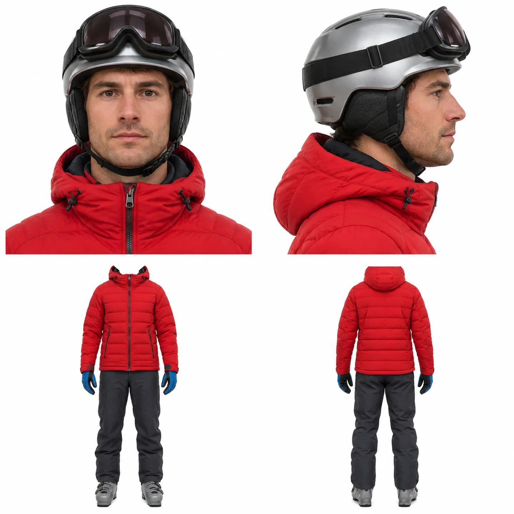
成年人，番茄红滑雪服、深色裤和银灰头盔。沿滑道领先或交错滑过。原视频人物很小，五官和雪镜上抬的状态按造型需要补画。

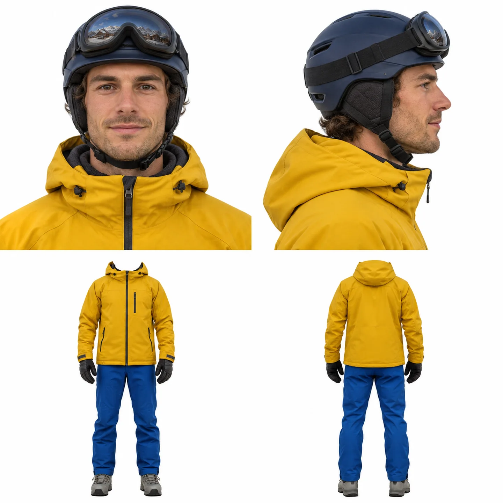
成年人，姜黄色外套和蓝色雪裤。位于木屋旁栏杆一带。正侧脸和手套下的姿态为复拍设定。

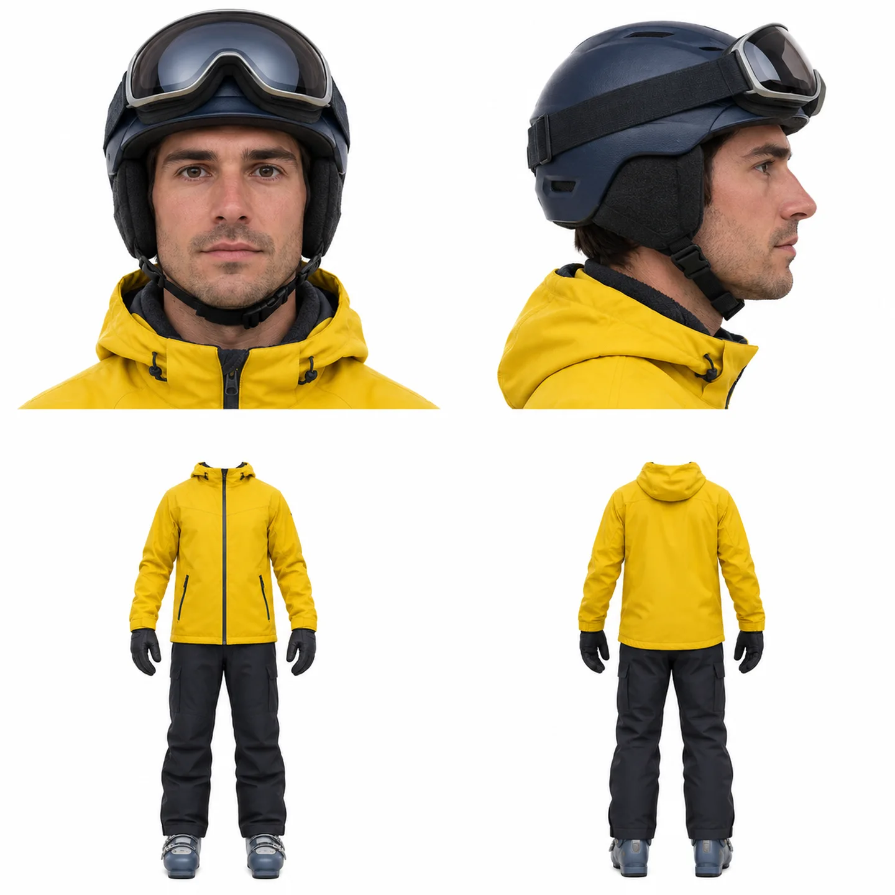
成年人，亮黄滑雪夹克和近黑裤，深色头盔。主要沿巧克力板下方的弯道滑行。参考里看不清的五官按成人补画。
场景与布景

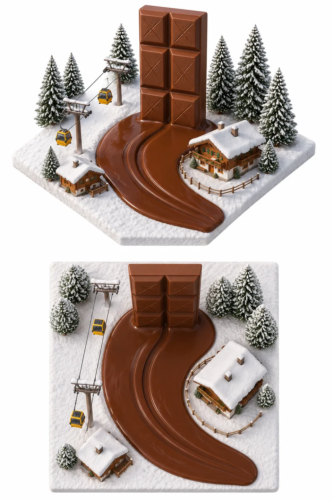
场景设定用于「积雪村落中央立着巨大的巧克力板」段落。开场扫过积雪木屋和树，左侧缆车经过。
道具与产品

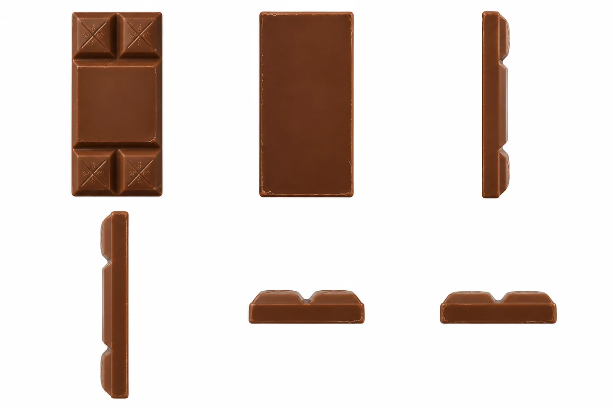
四块凸起的方格围绕中央平面，棕色巧克力材质。用于画面视觉中心和结尾产品展示，原包装式文字已去除。

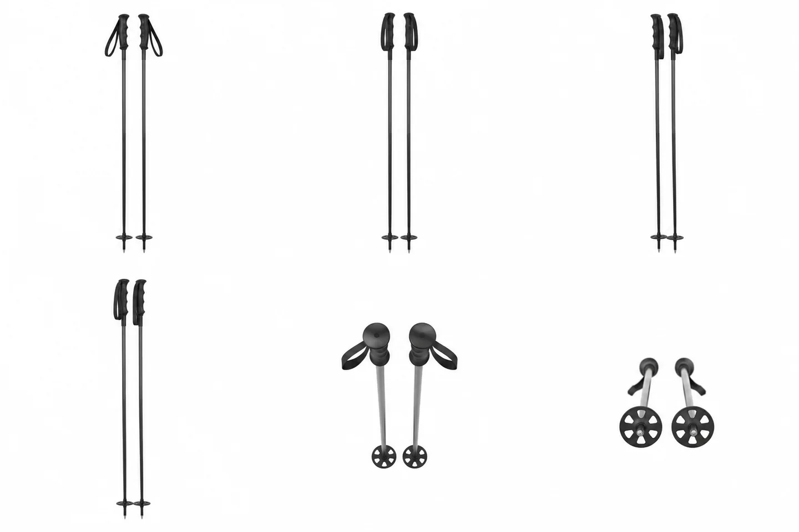
深色细杆、圆形雪托、窄握柄。用于滑行中保持动作连贯。

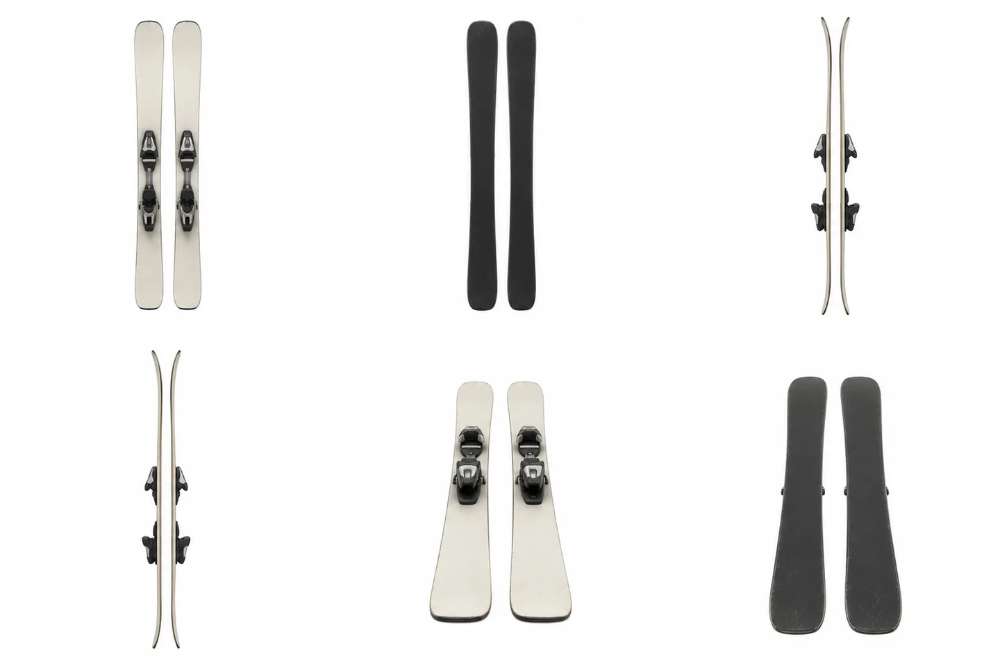
两块窄白雪板，黑色固定件，板头微翘。配给三种造型的滑雪者。

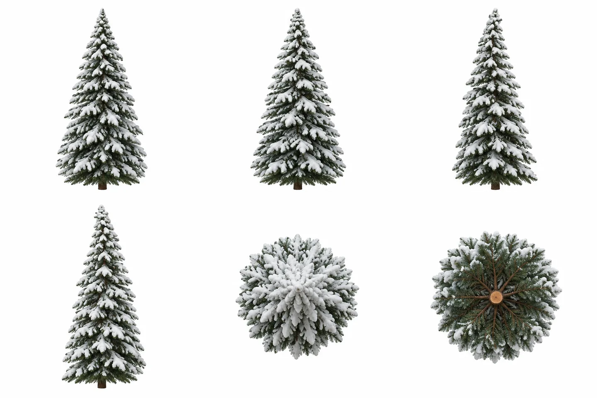
深绿色层状树枝上覆白雪。用于外缘景深和画面框景。

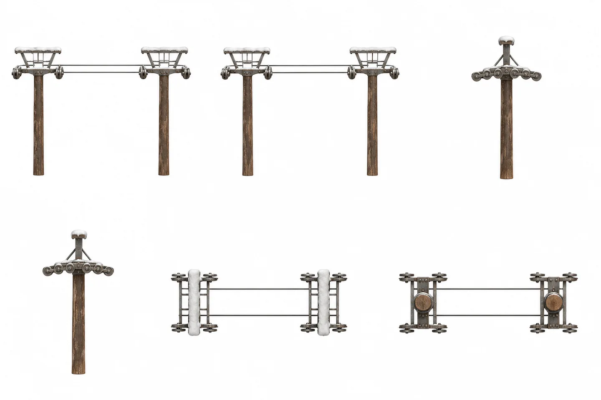
积雪的深色支柱、横头和成对索线，供黄色缆车在场景左侧穿行。

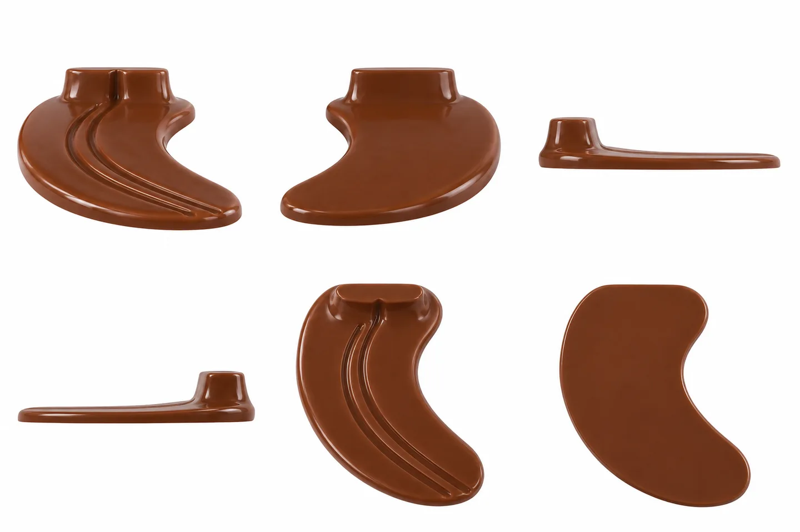
有两条细长滑行凹痕的弧形巧克力地表模块。作为融化过程完成后的造型参考。

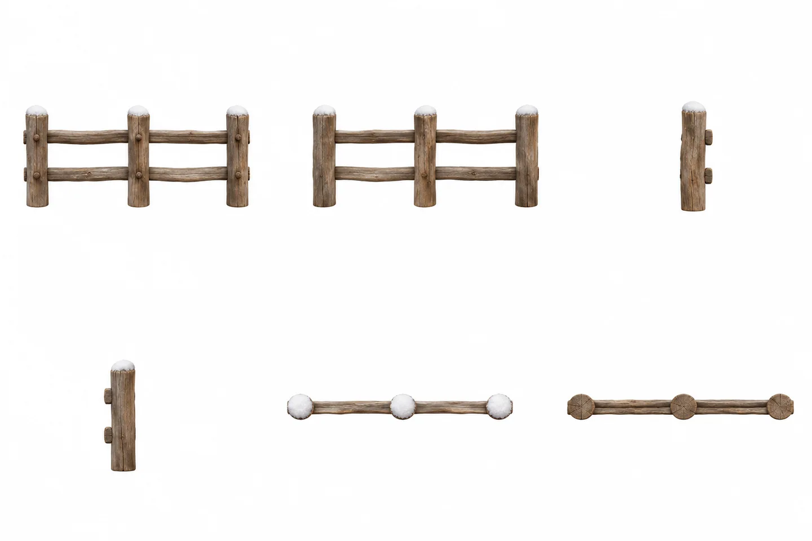
木桩与双道横杆，顶部少量积雪。沿近处木屋周围布置。

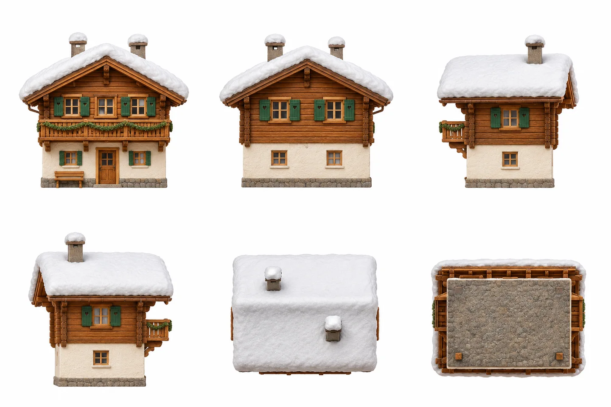
厚雪坡屋顶、原木窗框和木栏阳台。布置在滑道弯曲内侧及雪谷边缘。

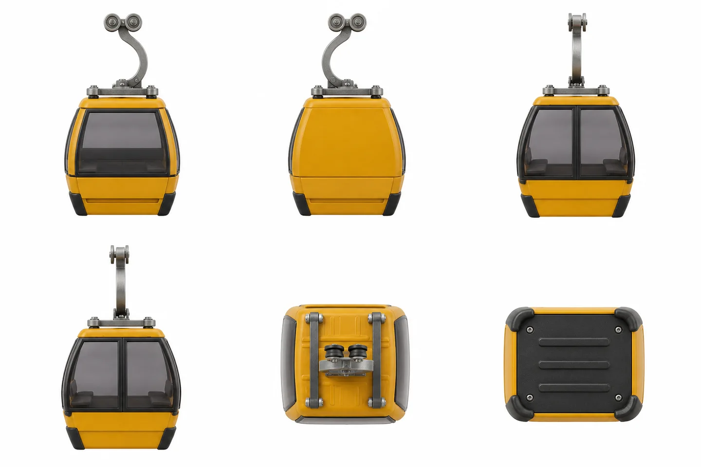
玻璃窗与深色边框，黄色下壳和上方悬挂钩。作为微缩交通动景。